Content · Research · Software Development
Content writer dan software developer.
Saya Noeni Indah Sulistiyani, mahasiswa tingkat akhir Teknik Informatika. Pengalaman saya mencakup penulisan SEO, penyuntingan, riset akademik, serta pengembangan aplikasi mobile dan web.
Writing
SEO · Editing
Development
Flutter · Web
Profil
Tentang saya
Saya memiliki pengalaman di bidang penulisan dan penyuntingan konten, publikasi web, serta riset akademik. Saya terbiasa menulis berdasarkan data, mengikuti panduan editorial, dan menyampaikan informasi dengan bahasa yang jelas.
Saya juga mengembangkan aplikasi menggunakan Flutter, PHP, MySQL, REST API, Java, HTML, CSS, dan JavaScript. Saya tertarik pada pekerjaan yang menggabungkan komunikasi, data, dan pengembangan produk digital.
Keahlian
Bidang dan tools yang saya gunakan.
01
Penulisan & Editorial
- Penulisan artikel SEO
- Copyediting dan proofreading
- Penulisan akademik
- Riset topik dan kata kunci
- Terjemahan Indonesia–Inggris
02
Riset & Publikasi Digital
- Kajian literatur
- Pembersihan dan analisis data
- Visualisasi data
- CMS dan publikasi web
- Koordinasi pekerjaan editorial
03
Pengembangan Perangkat Lunak
- Flutter dan REST API
- PHP, Laravel, dan MySQL
- Aplikasi desktop Java
- HTML, CSS, dan JavaScript
- Git, GitHub, dan dokumentasi
FlutterPHPMySQLJavaPythonJavaScriptHTMLCSSGitHubFigmaCanvaMicrosoft ExcelCMS
Portofolio
Proyek dan karya pilihan.
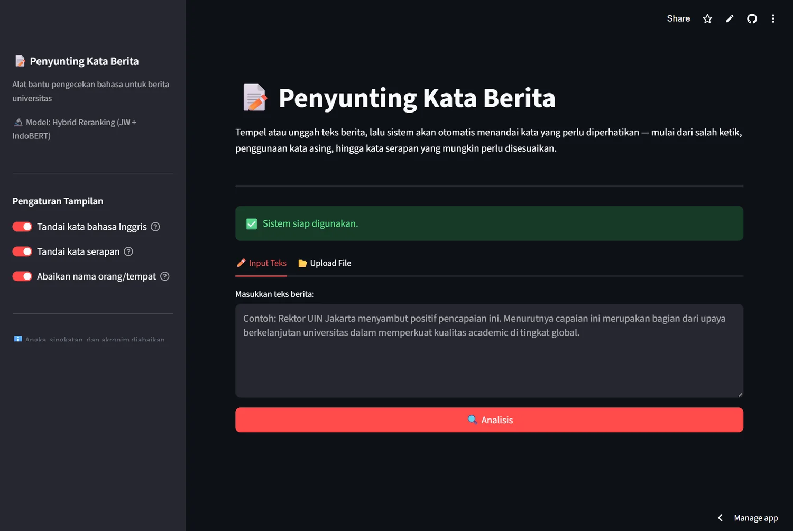
Penyunting Kata Berita Universitas
Aplikasi Streamlit untuk menandai typo, kata asing, dan kata serapan pada berita universitas. Sistem menggunakan model hybrid Jaro-Winkler dan IndoBERT.
Lihat repositori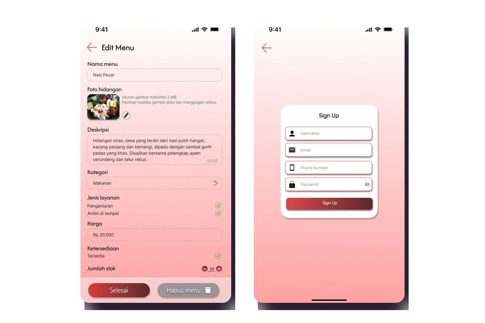
DPR Bites
Aplikasi pemesanan makanan yang dikembangkan saat magang sebagai Mobile Developer di Pustekinfo DPR RI. Fitur utamanya meliputi menu, keranjang, riwayat pesanan, dan profil pengguna.
Lihat repositori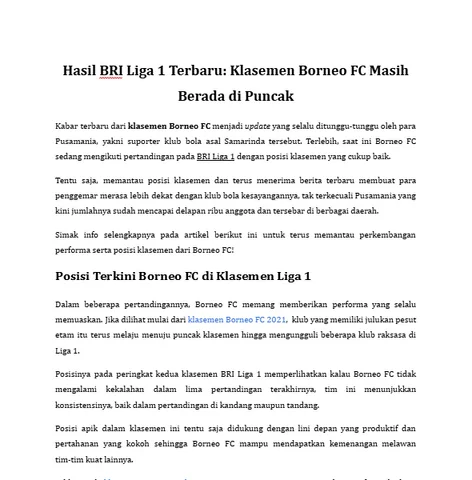
Artikel SEO — SIPWriter
Menulis 4–6 artikel olahraga per minggu berdasarkan riset topik, kata kunci, dan panduan editorial.
Lihat contoh artikel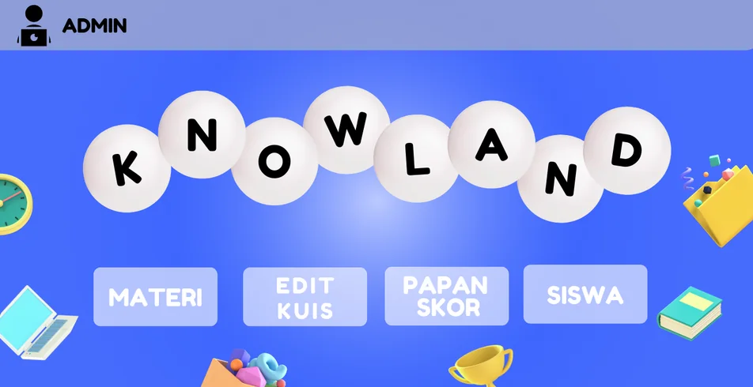
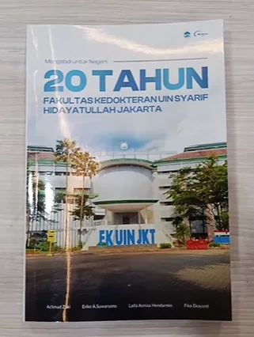
Penyuntingan Buku Akademik
Menyunting tata bahasa, struktur, konsistensi, dan kesiapan terbit naskah akademik.
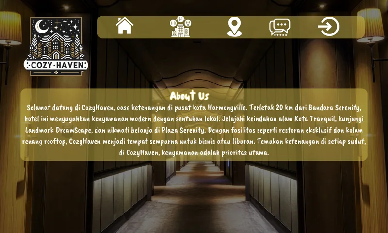
CozzyHaven
Aplikasi desktop reservasi hotel dengan fitur pencarian kamar, pemesanan, profil, dan pembayaran.
Lihat GitHub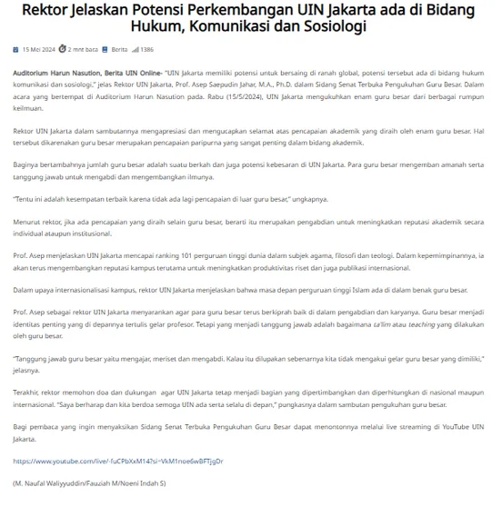
Editorial & Web Publishing — UIN Jakarta
Menyunting, menerjemahkan, dan menerbitkan 10–15 berita kampus per minggu melalui CMS UIN Jakarta.
Lihat konten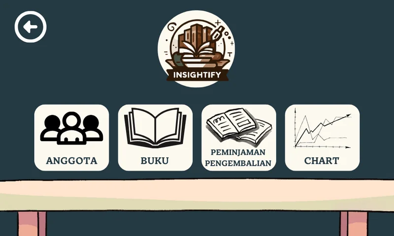
Insightify
Aplikasi desktop untuk mengelola katalog buku, anggota, dan transaksi peminjaman.
Lihat GitHub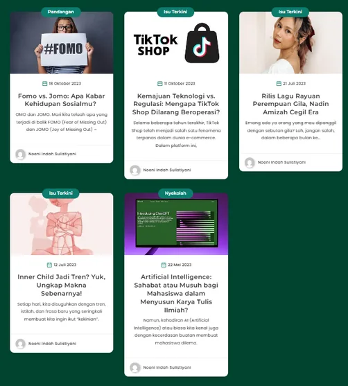
Artikel Sosial & Tren — Milenialis
Menulis artikel sosial, tren, dan opini untuk pembaca muda.
Lihat profil penulis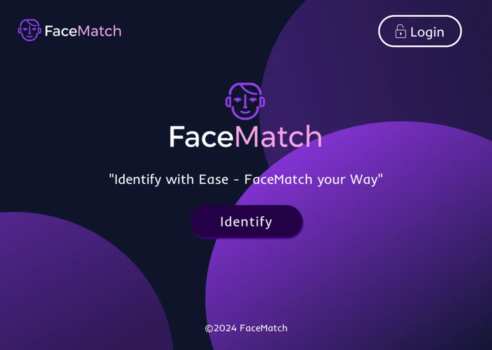
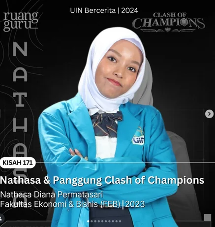
Story Hunter — UIN Bercerita
Mengelola tim penulis, melakukan wawancara, dan menulis konten cerita untuk Instagram.
Lihat Instagram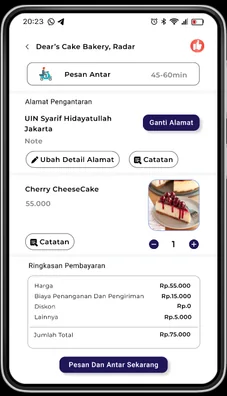
Pengalaman
Pengalaman kerja dan magang.
Ringkasan pengalaman profesional yang relevan.
Mobile Developer Intern
Jul–Sep 2025Pustekinfo DPR RI
Mengembangkan DPR Bites menggunakan Flutter, mengintegrasikan REST API, dan menyusun dokumentasi teknis.
SEO Content Writer
Jun 2024–Jul 2025SIPWriter
Menulis artikel olahraga berdasarkan riset, panduan editorial, dan kebutuhan kata kunci.
Book Copy Editor
Mar–Jun 2025Pusat Penelitian dan Penerbitan UIN Jakarta
Menyunting tata bahasa, struktur, konsistensi, dan kesiapan terbit naskah akademik.
Research Assistant
Mar 2024–Mar 2025Teknik Informatika UIN Jakarta
Melakukan kajian literatur, membersihkan data lebih dari 300 responden, dan membuat visualisasi data.
Editorial & Publishing Intern
Jan–Jun 2024Pusat Informasi dan Humas UIN Jakarta
Menyunting, menerjemahkan, dan menerbitkan berita kampus melalui CMS resmi UIN Jakarta.
Sedang Dipelajari
Fokus pengembangan saat ini.
Back-end Development
Mendalami Laravel dan pengembangan aplikasi berbasis PHP.
Machine Learning
Mempelajari klasifikasi, pengolahan data, dan visualisasi menggunakan Python.
Technical Content
Mengembangkan kemampuan menulis dokumentasi dan konten produk teknologi.
Kontak
Terbuka untuk peluang kerja dan kolaborasi.
Silakan hubungi saya untuk membahas proyek penulisan, riset, atau pengembangan aplikasi.